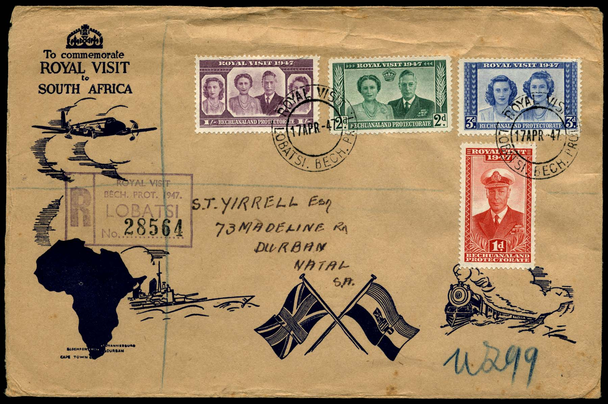

1895년
- 베추아날란드 시작
- 1895년, 영국령 베추아날란드는 시작되었다. 이 중 일부는 케이프타운 식민지에 편입되었고, 일부는 로디지아(지금은 짐바브웨)로 통하는 철도를 베추아날란드 내에 부설하는 것을 승인했다.

1910년
- 남아프리카의 독립
- 1910년, 남아프리카 연방(현 남아공)이 영국으로부터 독립을 한 후 많은 노동자들이 남아프리카의 다이아몬드 광산으로 내보내졌다.
초대 대통령
- 1910년
- 남아프리카는 이를 영국의 보호령으로 병합을 것을 요구했으나 1935년, 영국은 츠와나족을 옹호했기 때문에 거부했다. 1948년 대추장의 후계 예정자인 세레체 카마는 영국 유학 중 백인 여성과 결혼하는 것을 싫어하여 영국에 의해 추방되었다.
- 1956년
- 세레체 카마를 지지하는 츠와나족이 여기에 불만을 품고 시위를 하였다. 그로부터 8년 후인 1956년, 영국은 세레체 카마의 귀국과 정치 활동을 허용하였다.
독립
- 1959년
- 1959년 제헌심의회가 열리고, 1960년 12월 헌법을 제정하였으며, 1965년 보통선거거 치러져 세레체 카마가 대통령으로 선출되었다.
- 1966년
- 1966년 9월 베추아날란드 보호령은 드디어 ‘보츠와나공화국’으로서 독립하기에 이르렀다.